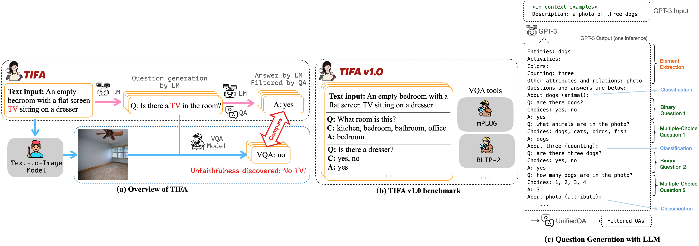
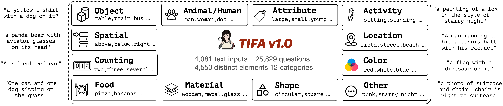
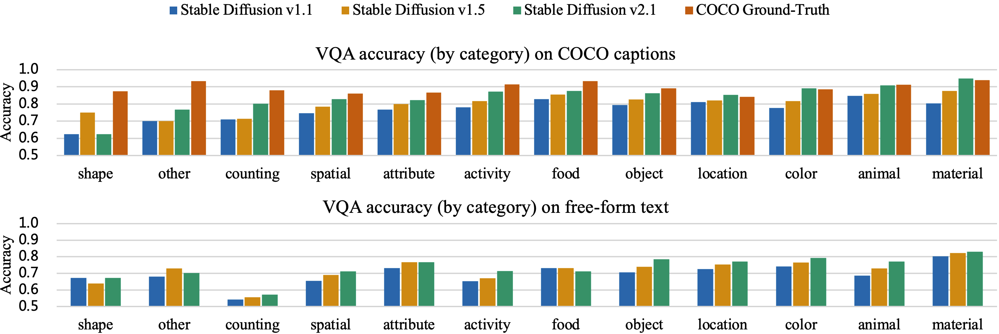
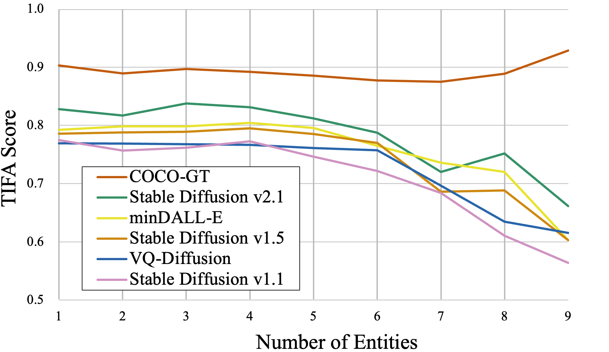
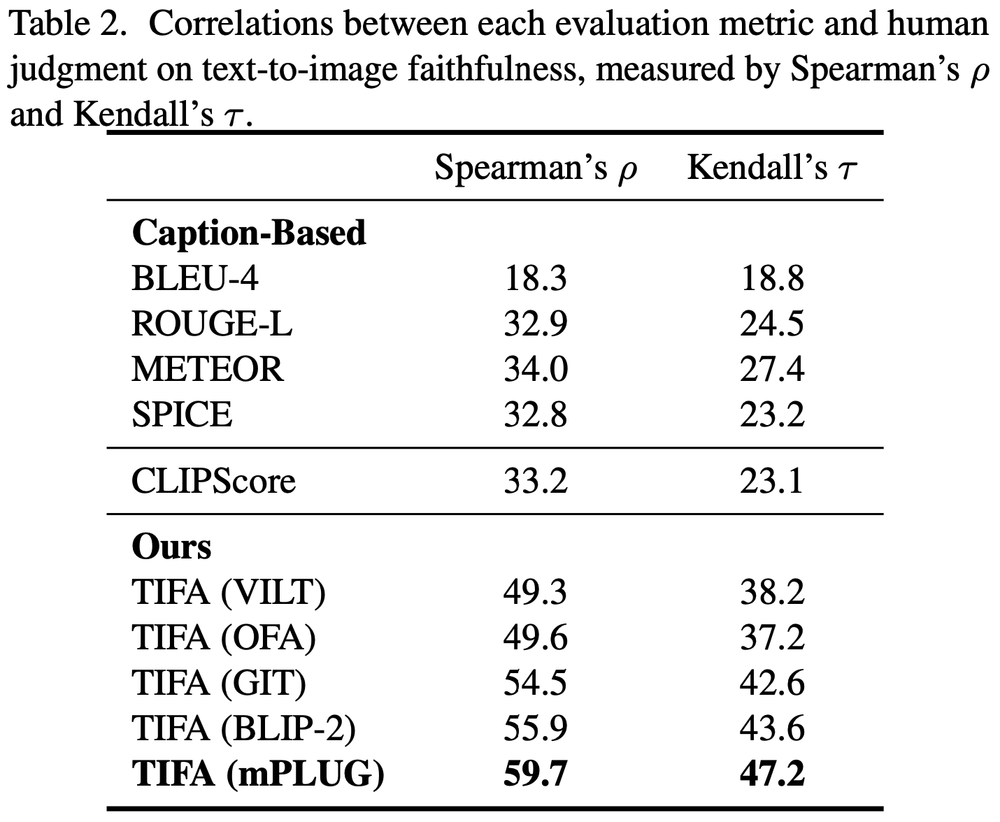

Why TIFA?
Experiments show that TIFA is much more accurate than CLIP in evaluating generated images, while being fine-grained and interpretable. It is an ideal choice for fine-grained automatic evaluation of image generation.
TIFA works better because it leverages LLMs to decompose the text input into fine-grained probes (questions), which allows VQA to capture more nuanced aspects of the text input and the generated image. Meanwhile, CLIP summarizes the image as a embedding, making it inaccurate and unable to capture fine-grained details of an image.
Do I need OpenAI API to run TIFA? No, you don't. We have pre-generated the questions for you in TIFA v1.0 benchmark. Meanwhile, we provide tools to generate your own questions with GPT-3.5.
Abstract
Text-to-image generation models often fail to produce images that accurately align with the text inputs. We introduce TIFA (Text-to-image Faithfulness evaluation with question Answering), an automatic evaluation metric that measures the faithfulness of a generated image to its text input via visual question answering (VQA).
Specifically, given a text input, we automatically generate several question-answer pairs using a language model. We calculate image faithfulness by checking whether existing VQA models can answer these questions using the generated image. TIFA is a reference-free metric that allows for fine-grained and interpretable evaluations of generated images.TIFA also has better correlations with human judgments than existing metrics (CLIP and SPICE).
Based on this approach, we introduce TIFA v1.0, a benchmark consisting of 4K diverse text inputs and 25K questions across 12 categories (object, counting, etc.). We present a comprehensive evaluation of existing text-to-image models using TIFA v1.0 and highlight the limitations and challenges of current models. For instance, we find that current text-to-image models, despite doing well on color and material, still struggle in counting, spatial relations, and composing multiple objects. We hope our benchmark will help carefully measure the research progress in text-to-image synthesis and provide valuable insights for further research.
Updates
Please email the authors if you want to submit to the leaderboard!
2023/08/22 We released the fine-tuned LLaMA 2 (7B) model that allows users to parse texts and generate questions locally without relying on OpenAI API.
2023/04/19 We released the human annotations on text-to-image faithufulness for TIFA v1.0. Check it out in our repo!
2023/03/24 TIFA v1.0 is released! We also updated our evaluation code, VQA modules, and question generation modules.
How does it work?
(a) Overview of how TIFA evaluates the faithfulness of a synthesized image. TIFA uses a language model (LM), a question answering (QA) model, and a visual question answering (VQA) model. Given a text input, we generate several question-answer pairs with the LM and then filter them via the QA model. To evaluate the faithfulness of a synthesized image to the text input, a VQA model answers these visual questions using the image, and we check the answers for correctness.
(b) TIFA v1.0 benchmark. While TIFA is applicable to any text prompt, to allow direct comparison across different studies, and for ease of use, we introduce the TIFA v1.0 benchmark, a repository of text inputs along with pre-generated question-answer pairs. To evaluate a text-to-image model, a user first produces the images for the text inputs in TIFA v1.0 and then performs VQA with our provided tools on generated images to compute TIFA.
(c) Our question-answer pair generation pipeline. The whole pipeline can be executed via a single inference of GPT-3 via in-context learning. Given the text prompt, GPT-3 first extracts the elements and then generates two questions for each element. The GPT-3 output is then parsed and filtered by UnifiedQA.
TIFA v1.0 Benchmark
TIFA v1.0 benchmark contains 4,081 text inputs sampled from MSCOCO, DrawBench, PartiPrompt, and PaintSkill. Each text input is paired with questions generated by GPT-3 and filtered by UnifiedQA, resulting in 25,829 questions altogether. The text inputs contain elements from 12 categories, as illustrated in the figure. We also show the most common elements from each category. In addition, we also show some example text inputs on the sides.
Text-to-Image Model Leaderboard

We benchmark several text-to-image models, including AttnGAN, X-LXMERT, VQ-Diffusion, minDALL-E, and Stable Diffusion v1.1, v1.5, and v2.1. The score they get on TIFA v1.0 is shown above. The horizontal axis shows their release dates. We also mark the release date of OpenAI's DALL-E 1 model. We can see a clear trend of how text-to-image models evolve over time. There is a jump in TIFA score after DALL-E is released, from 60% to 75%.
What are Stable Diffusion models struggling on?

Accuracy on each type of question in the TIFA v1.0 benchmark. The text-to-image models are Stable Diffusion v1.1, v1.5, and v2.1. We order the categories by the average score Stable Diffusion v2.1 gets on corresponding questions. For COCO captions, we also include the accuracy of the ground-truth images for reference. We can see that Stable Diffusion is struggling in shape, counting, and spatial relations. "other" mainly contains abstract art notions, and models are also struggling with them. Besides, we observe that generating images from real image captions in COCO is much easier than generating images from free-form text prompts.
Composing multiple objects is difficult

TIFA vs. number of entities (objects, animals, humans, food) in the text input. The accuracy starts to drop when more than 5 entities are added to the text, showing that compositionality is hard for text-to-image models. Meanwhile, TIFA scores for MSCOCO ground-truth (GT) images remain consistent.
TIFA is more correlated with human judgments than CLIP

We also collect human judgments on images generated by recent text-to-image models, using TIFA v1.0 text inputs. Each annotator gives a Likert Scale of 1-5 on "Does the image match the text?". This table shows the correlation between each automatic metric and human judgments. We can see that TIFA is more accurate than prior metrics (CLIP and captions) for evaluating text-to-image faithfulness. We hypothesize that the major challenge of these prior metrics is that they summarize the image outputs and text inputs into a single representation (embedding/caption). In contrast, TIFA exploits the power of LLMs to decompose the text input into fine-grained probes, which allows VQA to capture more nuanced aspects of the text input and generated image.
BibTeX
@article{hu2023tifa,
title={TIFA: Accurate and Interpretable Text-to-Image Faithfulness Evaluation with Question Answering},
author={Hu, Yushi and Liu, Benlin and Kasai, Jungo and Wang, Yizhong and Ostendorf, Mari and Krishna, Ranjay and Smith,
Noah A},
journal={arXiv preprint arXiv:2303.11897},
year={2023}
}